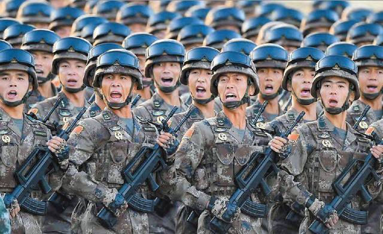

现在在军事科技上就好像是20世纪初期，在1900年，一支军队可以配备架退式射速野战炮，弹仓式步枪，马克沁重机枪，就已经是顶级军队了。
但是仅仅过了20多年，配备了坦克，轻机枪，冲锋枪，重型榴弹炮和配备机枪的战机，组成的军队就可以轻松的碾压式消1900年最强的军队。
21世纪初期也是如此，军事科技又迎来了大发展的时间点。
俄罗斯军事专家卡申表示，中国正在开发属于21世纪的三大未来武器系统。在未来战争，速度依然是最关键的因素，天下武功 ，唯快不破，依
然还是一个军事上的真理。我国预计将会在2020年以后正式装备东风-ZF型高超音速武器，这种高超音速武器可以以8倍音速飞行，射程超过60
00公里。
在最后的突防阶段，甚至可以达到20倍音速以上，这种武器将会让现在所有的防空系统和预警雷达集体变成老古董。没有那种雷达和导弹可以
拦截如此高速飞行的武器系统。
另外就是高智能轰炸机，也就是轰20隐身轰炸机，真正的战略轰炸机这种东西，载弹量在三四十吨以上，别的不说，打航母是真的爽。并且还
具备远程核常兼备作战能力。
最后一种就是电磁大炮，我国电磁大炮已经进行了多次试射。未来将会配备到大型军舰上，作为防空和对地打击，还有反舰作战的主力武器系统。
上一篇：“五险一金”要过时了 以后大家讨论的将是“六险二金”